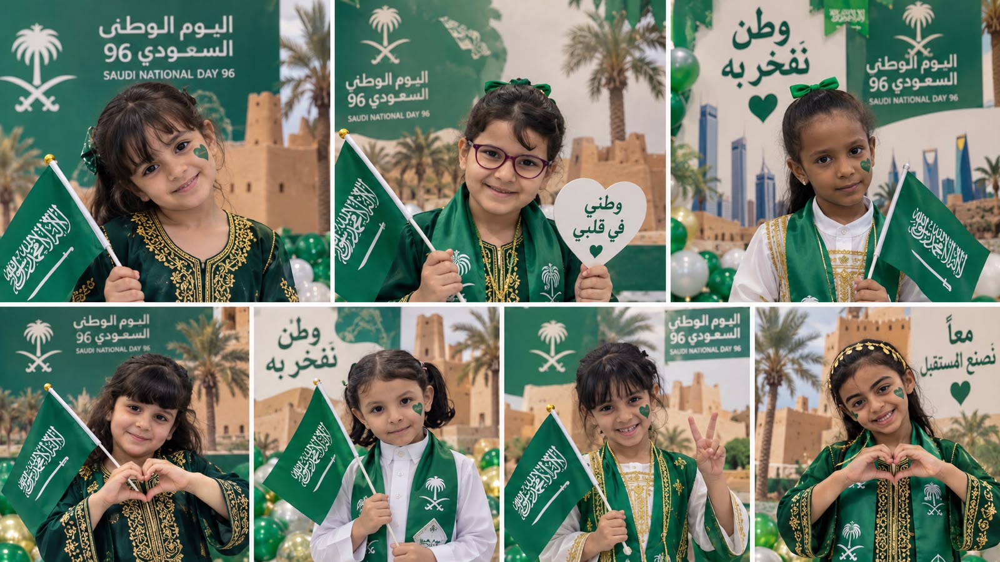
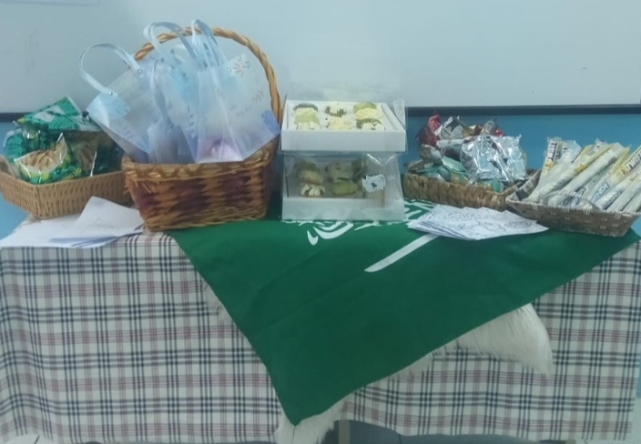

الرؤيةVision
تعليم نوعي وتفاعلي، يرتقي بالمتعلمات في بيئة جاذبة ومحفّزة على الابتكار، ويواكب تطلعات رؤية المملكة ٢٠٣٠.High-quality, interactive learning in an engaging environment that encourages innovation and supports Saudi Vision 2030.
ملف الأداء الوظيفي · ١٤٤٨هـTeaching portfolio · 1448 AH
معلمة الصفوف الأوليةEarly primary teacher
من أول حرف… إلى شغفٍ بالتعلّم.
رحلة تعليمية توثّق الممارسة، وتحتفي بإنجازات الطالبات، وتمنح كل خطوةٍ أثرًا.From the very first letter to a love of learning. A teaching journey that documents classroom practice and celebrates students’ work, one meaningful step at a time.

من قلب الفصلFrom the classroom
التعلّم رحلة.
والأثر… في التفاصيل.Learning is a journey.
Its impact is in the details.
٠١ / الممارسة المهنية01 / Professional practice
سبعة مجالات مستمدة من ملف الأداء الوظيفي، تجمع الممارسات والشواهد في مسار واضح. اختاري أي مجال لاستعراض ما يرتبط به.Seven areas drawn from the teacher performance file, bringing classroom practice and evidence together. Select an area to explore its supporting materials.
يُعرض الشاهد بحسب محتواه، وتُستكمل المجالات بإضافة الشواهد الجديدة.Evidence is grouped by its content. New materials can be added as the portfolio grows.
٠٢ / من التوثيق إلى الأثر02 / Classroom in focus
صور، مقاطع مرئية، وأوراق عمل وخطط؛ تفاصيل من الحياة الصفية يمكن استعراضها بحسب المجال أو نوع الملف.Photos, videos, worksheets, and plans capture classroom life. Browse by performance area, file type, or a word of your choice.
جرّبي كلمة أخرى أو اختاري مجالًا مختلفًا.Try another word or select a different area.
٠٣ / تخطيطٌ يسبق كل خطوة03 / Planning the journey
الخطط الأسبوعية للصف الأول الابتدائي بنات / ٢، للفصل الدراسي الأول من عام ١٤٤٨هـ، كما وردت في الملفات المرفقة.Weekly plans for first grade girls, class 2, first term of 1448 AH, presented from the supplied teaching documents.
افتحي الخطة للاطلاع على الدروس والواجبات والمهارات المستهدفة.Open a plan to view its lessons, homework, and target skills.
مصادرٌ تدعم التخطيطResources for every teaching step
الوصول إلى توزيع المناهج عبر منصة تحضيري، في مكانٍ واحد يسهل الرجوع إليه.A direct route to curriculum distribution on Tahdiri, ready to return to whenever you plan.
٠٤ / خلف كل أثر… رسالة04 / The purpose behind the practice
معلمة متخصصة في مرحلة الصفوف الأولى، أؤمن بأن التأسيس المتين في القراءة والكتابة هو حجر الأساس في رحلة التعلّم. أحرص على أساليب ممتعة وتفاعلية تنمّي حب التعلّم وتبني الثقة لدى الأطفال.I am an early primary teacher who believes that a strong foundation in reading and writing is the starting point of every learning journey. I use joyful, interactive approaches that nurture curiosity and build children’s confidence.
أمل منصور آل فهيدAmal Mansour Al-Fuhaid
تعليم نوعي وتفاعلي، يرتقي بالمتعلمات في بيئة جاذبة ومحفّزة على الابتكار، ويواكب تطلعات رؤية المملكة ٢٠٣٠.High-quality, interactive learning in an engaging environment that encourages innovation and supports Saudi Vision 2030.
تقديم تعليم متميّز وشامل، يعزّز القدرات العلمية والمهارية، ويحفّز التفكير الإبداعي والاستقلالية.Provide inclusive, thoughtful teaching that strengthens knowledge and practical skills, inspiring creativity and independence.
الهوية المهنيةProfessional profile
جامعة نجرانNajran University
منطلقات الملفPortfolio foundations
الحمد لله الذي علّم بالقلم، علّم الإنسان ما لم يعلم، والصلاة والسلام على نبينا محمد. يوثّق هذا الملف الجهود التعليمية والتربوية، ويجمع الممارسات المهنية والشواهد المتنوعة من المدرسة وبيئة الصف؛ ليكون مرجعًا للتأمل والتطوير المستمر. ويعكس العناية بالمتعلمات وتنمية معارفهن ومهاراتهن وقيمهن، عبر استراتيجيات تدريس فاعلة وتقويم بنّاء وبيئة صفية جاذبة، مع مراعاة الفروق الفردية وتعزيز التعلّم النشط.This portfolio documents educational efforts and professional practice through evidence from the classroom and school. It serves as a reference for reflection and continuous development, with attention to learners’ knowledge, skills, and values through effective teaching, formative assessment, and an engaging classroom that respects individual differences.
تقوم الممارسة المهنية على الإخلاص والعدل والرحمة واحترام المتعلّمات، وحفظ الحقوق والخصوصية، والالتزام بالمسؤوليات. وتشمل تطوير الأداء، وتهيئة بيئة صفية آمنة، والتعاون مع الأسرة والمجتمع المدرسي، وتوظيف التقويم لتحسين التعلّم.Professional practice is guided by integrity, fairness, care, respect for learners, protection of rights and privacy, and commitment to responsibilities. This includes continuous development, a safe classroom, collaboration with families and colleagues, and assessment that supports learning.
تتيح أوراق المهارات ونماذج أعمال الطالبات التأمل في التعلّم ومتابعة ما يحتاج إلى دعم. وتُعرض الشواهد المتاحة كما هي، لتكون أساسًا لتوثيق الملاحظات والخطوات التعليمية اللاحقة.Skills worksheets and samples of pupils’ work offer a basis for reflecting on learning and identifying areas for support. Available evidence is presented as supplied, ready to inform observations and next teaching steps.
استعراض أوراق العمل والشواهدBrowse worksheets and evidenceيبقى هذا الملف مساحة مفتوحة للتأمل والتطوير؛ تُضاف إليه الشواهد مع كل تجربة تعليمية جديدة. وأسأل الله أن يبارك في الجهد، وأن يكون كل تعلّم خطوة نحو ممارسة أكثر وعيًا وأثرٍ أجمل في رحلة الطالبات.This portfolio remains an open space for reflection and development, growing with each new teaching experience. May every opportunity to learn lead to more thoughtful practice and a meaningful contribution to students’ journeys.